Documentário: Brasília da Fantasia. Ensaio de apoio ao Eixo B ("o modo de fazer política no Brasil conjugado ao modo como Brasília foi pensada, construída e funciona"), conforme
CONCEITO.md.
Redigido em: 07/10/2026 (horário de Brasília). Revisado em: 08/10/2026, com o dossiêjk-veto-militar-e-brasilia.md(veto militar de 1954–56, documentos americanos do FRUS e correções de atribuição).
Base:eixo-A-construcao.md,eixo-B-bibliografia.md,antologia-literaria.mde pesquisa complementar na web feita nesta data.
Nota de método
- Nenhuma citação foi inventada. Toda citação entre aspas traz autor, obra ou veículo, ano e, quando possível, link. Existem três graus de verificação: - conferida na fonte: lida no texto original ou em transcrição integral confiável; - fonte secundária: lida em obra ou reportagem que cita o autor; - paráfrase: usada quando o texto original não pôde ser conferido. Paráfrases não levam aspas.
- As afirmações disputadas levam uma de três etiquetas: - COMPROVADO: há documento primário ou mais de uma fonte independente e confiável; - EM APURAÇÃO / interpretação historiográfica: hipótese que tem respaldo de autores, mas não tem prova documental de intenção; - BOATO: circula sem documentação localizada.
- Motivação política não se prova com facilidade. Raramente alguém deixa por escrito que muda uma capital para fugir da multidão. Por isso, quase todas as "razões de realpolitik" da Parte II estão marcadas como interpretação. Elas valem como leitura dos efeitos e das conveniências, e não como confissão.
- Páginas. Só aparecem quando foram conferidas por este dossiê ou pela fonte secundária indicada.
Prólogo: a cidade que se explica demais
Poucas cidades no mundo vieram acompanhadas de tantas justificativas. Brasília tem uma genealogia oficial que passa pelos inconfidentes, por José Bonifácio, pela primeira Constituição republicana, por uma comissão de astrônomos, por um santo italiano que sonhou em 1883 e por um rapaz de Jataí que leu a Carta de 1946 com mais atenção do que o candidato. O historiador Laurent Vidal resumiu esse excesso de legitimação na imagem de um "casulo mitológico" (Vidal, De Nova Lisboa a Brasília, Editora UnB, 2009, p. 243, citado por Derntl, Arquitextos 249.06, 2021 fonte secundária). Na mesma linha, Vânia Moreira escreveu que "a ideologia vestiu-se de história e de forma sistemática buscou legitimar a construção da nova capital" (Moreira, Brasília: a construção da nacionalidade, Edufes, 1998, p. 66, citada por Derntl, 2021 fonte secundária; http://vitruvius.com.br/revistas/read/arquitextos/21.249/8010).
Uma obra que precisa de tantas razões convida à pergunta sobre aquelas que ninguém declarou. Este ensaio separa as duas ordens: o que se disse em público para justificar a mudança e o que historiadores, críticos e adversários sugeriram que também estivesse em jogo. Depois apresenta os dez personagens que deram corpo ao projeto, com o que pensavam, em que acreditavam e o que disseram. Por fim, tenta responder à pergunta central do filme: que relação entre governo e povo a cidade foi desenhada para produzir, e que mentalidade política a desenhou?
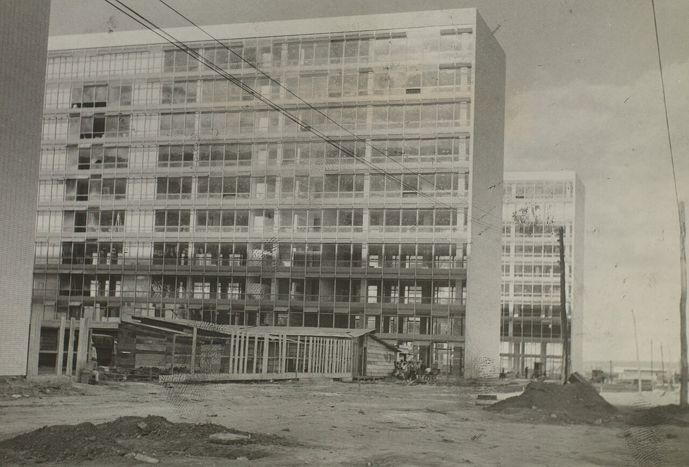
As justificativas públicas
1. O mandato constitucional: setenta anos de letra morta
A primeira justificativa é jurídica, e é a mais sólida. A Constituição republicana de 24 de fevereiro de 1891 determinava, no art. 3º:
"Fica pertencendo à União, no planalto central da República, uma zona de 14.400 quilômetros quadrados, que será oportunamente demarcada para nela estabelecer-se a futura Capital federal." [conferida na fonte: Planalto, https://planalto.gov.br/ccivil_03/constituicao/constituicao91.htm]
O parágrafo único completava: "Efetuada a mudança da Capital, o atual Distrito Federal passará a constituir um Estado." COMPROVADO.
A Constituição de 1934 retomou o tema no art. 4º das Disposições Transitórias: "Será transferida a Capital da União para um ponto central do Brasil." O presidente deveria nomear uma comissão de estudos, e a Câmara escolheria o local [redação reproduzida pela linha do tempo do STF e pela Revista de Informação Legislativa do Senado, v. 47, n. 188, https://www12.senado.leg.br/ril/edicoes/47/188/ril_v47_n188_p153.pdf; fonte secundária para a redação literal]. COMPROVADO quanto à existência do dispositivo.
A Constituição de 1946, no art. 4º do Ato das Disposições Constitucionais Transitórias, foi mais precisa: "A Capital da União será transferida para o planalto central do País." O texto previa ainda uma comissão de técnicos a ser nomeada em sessenta dias, uma lei especial e uma data a ser fixada pelo Congresso depois da demarcação [redação reproduzida na cronologia legislativa da Câmara dos Deputados, lida em trecho de resultado de busca; a página original devolveu erro 404 em 07/10/2026]. COMPROVADO.
A ironia vem da cronologia. Entre 1891 e 1956, a mudança foi obrigação constitucional por 65 anos e nunca saiu do papel. O mandato não explica por que a capital foi construída. Explica, quando muito, por que ninguém podia chamar a obra de ilegal. JK usou exatamente esse argumento: ele não teria inventado Brasília, apenas cumprido a Constituição. O argumento é verdadeiro e insuficiente ao mesmo tempo, porque seus antecessores também juraram cumprir a Carta e não mudaram nada.
2. A Missão Cruls: a ciência como certidão de batismo
Em 1892, o governo Floriano Peixoto enviou ao Planalto a Comissão Exploradora do Planalto Central, chefiada pelo astrônomo belga naturalizado brasileiro Luiz Cruls, diretor do Observatório Nacional. O relatório, publicado em 1894, demarcou o "Quadrilátero Cruls", de 14.400 km², delimitado por paralelos e meridianos [Câmara dos Deputados, Biblioteca Digital: https://bd.camara.leg.br/bd/items/ce299218-2711-4fe6-905b-626dd2af6b89; PDF reproduzido pelo Poder360: https://static.poder360.com.br/2020/04/relatorio-da-missao-que-explorou-brasilia.pdf; análise em História, Ciências, Saúde – Manguinhos, 2006: http://www.scielo.br/scielo.php?pid=S0104-59702006000400008&script=sci_arttext]. COMPROVADO.
A Missão Cruls deu à mudança um verniz positivista de ciência neutra, com clima, salubridade, altitude e águas medidos por instrumentos. Em 1956, esse relatório velho de sessenta anos foi usado como prova de que a escolha era técnica, e não política. Os estudos posteriores, como os da Comissão Polli Coelho (1946–48) e os da Comissão José Pessoa (1954–55), cuja secretaria coube ao médico Ernesto Silva, reforçaram essa leitura. Um detalhe registrado por Jeferson Tavares desmonta o determinismo geográfico: nos debates de 1946–48, JK e Israel Pinheiro defendiam a capital no Triângulo Mineiro, e não no Planalto (Tavares, "50 anos do concurso para Brasília", Arquitextos 086.07, 2007, https://vitruvius.com.br/revistas/read/arquitextos/08.086/234 [fonte secundária, via eixo-A, 2.10]). A geografia "inevitável" teve, portanto, alternativas, e entre seus defensores estavam os próprios fundadores.
3. Interiorização e integração nacional
A justificativa de maior apelo popular foi a interiorização. A tese diz que o Brasil vivia agarrado ao litoral, na imagem colonial de Frei Vicente do Salvador dos portugueses que se contentavam em arranhar o litoral como caranguejos (paráfrase da História do Brasil, de 1627; o original não foi conferido nesta sessão, por isso vai sem aspas). A tese seguinte é que uma capital no centro puxaria estradas, população e mercado para o Oeste. O TJDFT, em texto institucional, resume a leitura oficial: a cláusula de 1891 mostra "a importância que o governo republicano atribuía à época à ocupação das vastas áreas desabitadas do interior do país, como meio de garantir a integridade do território e a unidade nacional" [conferida na fonte: TJDFT, "A primeira Constituição da República", 2020, https://www.tjdft.jus.br/institucional/imprensa/campanhas-e-produtos/artigos-discursos-e-entrevistas/artigos/2020/a-primeira-constituicao-da-republica].
A integração tinha obras concretas: a Belém-Brasília, com mais de 2 mil km (Memorial da Democracia, card 4), as ligações com Belo Horizonte e Goiânia e o projeto ferroviário de 240 km até Pires do Rio (Mensagem ao Congresso de 1960, transcrita em doc.brazilia; ver eixo-A, 7.4). COMPROVADO como programa e como obra.
Os críticos responderam desde cedo. Na tribuna da nova Câmara, em 6 de julho de 1960, Carlos Lacerda argumentou que a integração nacional já estava feita, por Rio Branco nas fronteiras e por Rondon no sertão, e que a nova capital era supérflua. Também descreveu os prédios como "mausoléus da desnecessidade" (Lacerda, discurso de 06/07/1960, trechos em Misto Brasil, 08/03/2024, https://mistobrasil.com/2024/03/08/carlos-lacerda-chama-predios-de-brasilia-de-mausoleus-da-desnecessidade/ [fonte secundária; o Diário do Congresso não foi conferido]).
4. A profecia de Dom Bosco: o santo como sócio-fundador
Nenhuma justificativa diz tanto sobre a "fantasia" do título quanto a profecia. Em 30 de agosto de 1883, o sacerdote salesiano João Bosco teria sonhado com uma região entre os paralelos 15 e 20, junto a um lago, onde surgiria "a terra prometida, onde correrá leite e mel" (tradução citada pelo G1, 08/12/2024, https://g1.globo.com/df/distrito-federal/noticia/2024/12/08/sacerdote-italiano-teria-tido-sonho-profetico-sobre-brasilia-em-1883-entenda-a-historia.ghtml).
JK cita o sonho em Por que construí Brasília já com a expressão "Grande Civilização" e conta que se emocionou ao lê-lo (ed. Senado, 2000, p. 18 [conferida no dossiê, eixo-A, item 1]). A Agência Nacional produziu o cinejornal Brasília: profecia de São João Bosco, que abre com a cartela "surgirá a Grande Civilização, a Terra Prometida" (Gomes, "Brasília nos filmes da Novacap", Resgate, 2013 fonte secundária). COMPROVADO quanto ao uso propagandístico.
A palavra que dá grandeza ao sonho talvez não esteja no original. Segundo Fernando Tamanini, citado pelo historiador Matheus Rosa ao G1, o jurista goiano Segismundo Mello teria pedido ao padre Cleto Caliman que acrescentasse "civilização" à tradução. O texto teria chegado a Israel Pinheiro, devoto do santo. EM APURAÇÃO: a cadeia de transmissão é única (Tamanini → Rosa → G1) e falta conferir o original italiano das Memorie Biografiche, vol. XVI.
O episódio importa porque mostra um Estado laico recorrendo a um sonho católico como certidão de destino. A Constituição separava Igreja e Estado, e o urbanista pôs a Catedral "numa praça autônoma disposta lateralmente, não só por questão de protocolo, uma vez que a Igreja é separada do Estado" (Costa, Relatório do Plano Piloto, 1957, item 9 conferida na fonte). A capital modernista, laica e racional nasceu com padrinho no céu. E o arquiteto que desenhou a Catedral era ateu declarado (ver Parte III).
5. O Plano de Metas, "cinquenta anos em cinco" e a "meta-síntese"
O Programa de Metas de 1956 tinha 30 metas, distribuídas por energia, transportes, alimentação, indústrias de base e educação. Brasília entrou depois, como 31ª meta, chamada de "meta-síntese" (síntese de trabalhos acadêmicos, por exemplo a monografia da UFOP "50 anos em 5: história e resultados do Plano de Metas", https://www.monografias.ufop.br/bitstream/35400000/8391/3/MONOGRAFIA_Hist%C3%B3riaResultadosPlano.pdf; Memorial da Democracia, "Nacional-desenvolvimentismo", https://memorialdademocracia.com.br/card/nacional-desenvolvimentismo fontes secundárias). COMPROVADO.
O detalhe decisivo está no próprio JK. Quando Toniquinho o interpelou em Jataí, ele já tinha seu programa, "e em nenhuma parte dele existia qualquer referência àquele problema" (JK, Por que construí Brasília, trecho reproduzido pelo portal Disparada, https://disparada.com.br/juscelino-kubitschek-por-que-construi-brasilia/ [fonte secundária; o livro integral está em https://www2.senado.leg.br/bdsf/handle/id/1039]). A "síntese" do programa foi, portanto, acrescentada depois. Isso não diminui a obra, mas mostra que a racionalidade planejadora veio a reboque de uma decisão política.
O lema "cinquenta anos em cinco" é atribuído ao poeta Augusto Frederico Schmidt, conselheiro e redator de discursos de JK (Wikipédia, "Augusto Frederico Schmidt"; Sesc SP, "Schmidt, nosso 'gordinho sinistro'", https://portal.sescsp.org.br/online/artigo/3399_SCHMIDT+NOSSO+GORDINHO+SINISTRO fontes secundárias). EM APURAÇÃO quanto à autoria exata. O lema traduz uma filosofia do tempo político: o Brasil teria um atraso a recuperar, e o Estado, acelerado por um líder, faria em cinco anos o que a sociedade levaria cinquenta para fazer sozinha.
6. Segurança nacional
O argumento de que uma capital litorânea é vulnerável a bombardeio naval ou desembarque inimigo é antigo e reaparece nos debates da República. Paulo Mendes Campos registrou outra versão, mais moderna. Num jantar na fronteira com a Colômbia, JK teria apresentado Brasília como "padrão de posse" contra uma futura cobiça internacional pela Amazônia: "o Brasil ergue Brasília em cima da hora, como um padrão de posse" (Campos, "Brasília", Manchete, nº 1053, 24/06/1972, https://cronicabrasileira.org.br/cronicas/12959/brasilia conferida na fonte).
O vocabulário é o mesmo de Lúcio Costa, que apresentou o plano como "um ato deliberado de posse, de um gesto de sentido ainda desbravador, nos moldes da tradição colonial" (Relatório, 1957 conferida na fonte). COMPROVADO como discurso. Como necessidade militar real, é interpretação, e controversa, porque em 1960 a ameaça plausível ao Rio não era a esquadra estrangeira.
7. Desenvolvimento do Centro-Oeste
A capital deveria ser, nas palavras do próprio Costa, "não [...] uma decorrência do planejamento regional, mas a causa dele: a sua fundação é que dará ensejo ao ulterior desenvolvimento planejado da região" [Relatório, 1957, conferida na fonte]. É a lógica do polo de crescimento: plantar o Estado no meio do cerrado e esperar que a economia o siga. A população do DF passou de cerca de 6 mil em 1956 para 141.742 em 1960 e 546.015 em 1970 (IBGE; IPE-DF/Paviani, eixo-A, 4.2). COMPROVADO como efeito demográfico. Se a capital "desenvolveu" o Centro-Oeste ou se o agronegócio dos anos 1970 em diante teria vindo de qualquer forma é debate econômico aberto.
8. A retórica nacional-desenvolvimentista e o ISEB
O pano de fundo ideológico é o nacional-desenvolvimentismo. O Instituto Superior de Estudos Brasileiros (ISEB), criado em 1955 e vinculado ao Ministério da Educação, reuniu intelectuais como Hélio Jaguaribe, Álvaro Vieira Pinto, Roland Corbisier, Guerreiro Ramos e Nelson Werneck Sodré, este último historiador ligado ao PCB. Para o ISEB, o subdesenvolvimento era uma condição a ser superada por um projeto nacional conduzido pelo Estado (Memorial da Democracia, card "Nacional-desenvolvimentismo" [fonte secundária; lista de nomes a conferir no card]).
Historiadores econômicos observam que o desenvolvimentismo de JK foi mais "associado" ao capital estrangeiro, sobretudo na indústria automobilística, do que o "nacional" do vocabulário isebiano sugere (monografia da UFOP, citada acima fonte secundária). Para Brasília, o essencial é o seguinte: a cidade foi a forma visível de uma ideologia segundo a qual o Estado faz a nação, e não o contrário. Mário Pedrosa, o maior crítico de arte do país e trotskista de formação, viu o paradoxo: a cidade-manifesto do moderno era "uma tomada de posse à moda cabralina, chanfrando na terra o signo da cruz" ("Reflexões em torno da nova capital", 1957, citado por G. Wisnik em Releituras do Modernismo, BBM-USP, 2022, https://bbm.usp.br/documents/84/ReleiturasDoModernismo.pdf fonte secundária). Pedrosa cunhou também a fórmula de que somos, "pela fatalidade de nossa formação condenados ao moderno" ("Brasília, a cidade nova", 1959, citado por C. Favaretto, idem).
9. Jataí, 4 de abril de 1955: a promessa que virou destino
O mito de origem preferido de JK é um comício sob chuva. Segundo o Memorial JK, o comício de abertura da campanha, em Jataí (GO), foi transferido para o salão de um revendedor de automóveis Studebaker por causa de um temporal, e a plateia foi menor do que o esperado (http://www.memorialjk.com.br/bsb/pgs/1comicio.htm [conferida na fonte, por trecho]). JK pregou o respeito "integral" à Constituição. Um ouvinte perguntou se isso incluía o dispositivo da mudança da capital. Na versão do próprio JK, a resposta foi:
"Acabo de prometer que cumprirei, na íntegra, a Constituição e não vejo razão por que esse dispositivo seja ignorado. Se for eleito, construirei a nova Capital e farei a mudança da sede do Governo." (JK, Por que construí Brasília, 1975; ed. Senado 2000, pp. 6–7 conferida na fonte)
COMPROVADO quanto ao episódio, com uma divergência de nome. No livro, JK chama o interpelante de "António Carvalho Soares – vulgo Toniquinho", e o Memorial da Democracia segue essa grafia. O Memorial JK e a OAB-GO o identificam como Antônio Soares Neto, o "Toniquinho JK" (https://www.oabgo.org.br/oab-go-rende-suas-homenagens-a-toniquinho-jk/). Conferir antes de pôr na tela.
O site do Memorial JK acrescenta um contexto que interessa mais ao filme do que a anedota: naquele momento, "um impressionante esquema de pressão, a que se vincularam generais das três Armas e o próprio Presidente da República, João Café Filho, buscava forçá-lo a desistir da candidatura, advertindo-o, claramente, de que jamais tomaria posse, se chegasse a ser eleito" (http://www.memorialjk.com.br/bsb/pgs/1comicio.htm conferida na fonte). Atenção à natureza da fonte: a frase é do texto narrativo institucional, sem assinatura, do site do Memorial JK. Não está no livro de JK nem em documento de época. A mesma página admite que a pregação legalista de JK "era o que verdadeiramente pensava e sentia, mas essa colocação convinha também a sua causa" conferida na fonte.
O núcleo da afirmação é COMPROVADO por outras fontes. Em janeiro de 1955, os três ministros militares, Canrobert, Juarez Távora e outros chefes assinaram um memorando pedindo um candidato "único e civil", e Café Filho o leu na Voz do Brasil em 27/01/1955 (Atlas Histórico do Brasil, CPDOC/FGV, verbete "Movimento do 11 de Novembro", de Sérgio Lamarão, https://atlas.fgv.br/verbete/6022 conferida na fonte). O aviso pessoal de que JK "jamais tomaria posse" aparece só na narrativa do Memorial. Não foi localizado em documento. A promessa de Jataí foi feita, portanto, por um candidato sob veto militar, e esse dado ilumina a Parte II.
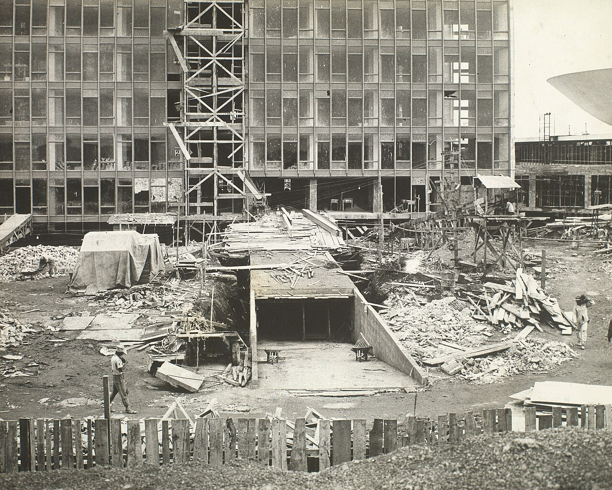
As motivações de realpolitik (hipóteses, interpretações e o que se pode provar)
Advertência: nenhuma das hipóteses abaixo aparece como intenção declarada em documento oficial. São leituras de historiadores, adversários e críticos, ou inferências a partir dos efeitos. Cada uma traz sua etiqueta.
O candidato sob veto: o que os documentos mostram
Etiqueta: COMPROVADO quanto aos fatos; interpretação quanto ao cálculo. As fontes de cada frase vêm logo abaixo do texto.
Quando Juscelino prometeu a nova capital em Jataí, em 4 de abril de 1955, fazia mais de dois meses que o presidente Café Filho lera na Voz do Brasil um memorando dos três ministros militares, de Canrobert e de Juarez Távora pedindo um candidato "único e civil" — qualquer um, desde que não fosse ele. Entre os signatários estava o ministro da Guerra, Henrique Lott, o mesmo que dez meses depois poria os tanques na rua para lhe garantir a posse. A ironia não termina aí. Onze dias depois do comício, uma comissão nomeada por Café Filho e presidida por um marechal, José Pessoa, escolheu o sítio da futura cidade. A capital no Planalto não era uma ideia contra os quartéis: era um velho projeto dos próprios quartéis, da comissão do general Polli Coelho à do marechal Pessoa. O candidato vetado a tomou para si, embrulhada na única bandeira que o veto não podia rasgar, a Constituição. O próprio JK admitiria que a resposta de Jataí fora "política até certo ponto"; a memória oficial, mais franca, diz que a pregação legalista "convinha também a sua causa".
O que os documentos mostram depois da posse é menos uma conspiração contra os generais do que uma engenharia paciente contra a oposição. JK fez o governo de Goiás patrocinar a mensagem e deu a um udenista, Emival Caiado, a autoria da lei que fixou a data. Reservou à UDN um terço da direção da Novacap — e a lista tríplice do partido, por sinal, trazia o nome de Café Filho. A lei que criou a companhia, ele a sancionou "após o jantar, sem qualquer publicidade", para não "alertar a Oposição". Com os militares, a moeda era outra: soldo, equipamento, um porta-aviões e a permanência de Lott. Em agosto de 1958, diante de Foster Dulles, o presidente pediu mais armas para o Exército porque, nas palavras do memorando americano, ele era "a key element in the support of his government". Brasília entrava nessa conta pela porta lateral: a Engenharia do Exército carregou as máquinas da Belém–Brasília, e oitenta alunos da Escola Superior de Guerra foram ver o canteiro.
Nenhum memorando secreto conhecido diz que a cidade foi erguida para escapar do Rio, ocupar a tropa ou desarmar o veto. Os ministérios militares, aliás, só subiriam o Planalto entre o fim dos anos 1960 e o começo dos 1970, já sob outro regime. O que a cidade fez, nas palavras do biógrafo Ronaldo Costa Couto, foi redefinir "a agenda política": trocou a pergunta "ele pode tomar posse?" por "ficará pronta a tempo?". Para a embaixada americana, era a "bid for posterity" de Kubitschek. Para a UDN, que acabou admitindo, pela boca de Antônio Carlos Magalhães, que "o pior dos crimes é negar a evidência", era uma evidência de concreto armado. Em 1960, a oposição já não dizia que JK não podia governar; dizia que usaria Brasília para governar demais, num "golpe continuísta". Os golpistas de 1955 tinham virado fiscais da Constituição. Foi a vingança mais elegante que o veto poderia receber — e nenhum documento diz que foi planejada.
Fontes deste trecho:
- Memorando de janeiro de 1955, Voz do Brasil (27/01) e signatários: Atlas CPDOC, verbete 6022, https://atlas.fgv.br/verbete/6022 conferida na fonte.
- Lott entre os signatários: o verbete de Lott no Dicionário Histórico-Biográfico Brasileiro (DHBB/FGV) diz que o documento foi "assinado pelos três ministros militares", e Lott era o ministro da Guerra. Espelho do verbete: https://wiki-dhbb.netlify.app/3008 [conferida na fonte; conferir também no portal do CPDOC].
- Escolha do sítio (15/04/1955) pela comissão de José Pessoa: JK, Por que construí Brasília, ed. Senado 2000, pp. 27–29 conferida na fonte. Em carta a JK de 17/11/1954, o marechal Pessoa conta que o ministro da Guerra prometera "sediar um Batalhão de Engenharia do nosso Exército em Pirapora ou Formosa": http://doc.brazilia.jor.br/HistDocs/1954-11-17-carta-Pessoa-JK.shtml [conferida na transcrição; original no Relatório da CLNCF, 1955, não conferido].
- General Djalma Polli Coelho, diretor do Serviço Geográfico do Exército, presidente da comissão de 1946: Memória IBGE, https://memoria.ibge.gov.br/historia-do-ibge/galeria-de-presidentes/20959-djalma-polli-coelho.html conferida na fonte.
- "Política até certo ponto": JK, p. 7 conferida na fonte. "Convinha também a sua causa": Memorial JK (texto institucional sem assinatura) conferida na fonte.
- Patrocínio de Goiás, Emival Caiado, lista tríplice da UDN (Café Filho, Jales Machado, Íris Meinberg) e sanção "após o jantar": JK, pp. 8, 44–45 e 108–109 conferida na fonte. "Alertar a Oposição": p. 44.
- Soldo, equipamento, promoções e Lott: Sheldon Maram, "Juscelino Kubitschek and the Politics of Exuberance, 1956–1961", Luso-Brazilian Review 27:1, 1990, p. 37, https://warwick.ac.uk/fac/arts/history/students/modules/hi2f1/programme/seminar15/sheldon_maram_on_jk_1990_lbr.pdf conferida na fonte.
- Porta-aviões Minas Gerais, "atendendo a reivindicação da Marinha e da Aeronáutica": CPDOC, biografia de JK, https://cpdoc.fgv.br/biografias/juscelino-kubitschek conferida na fonte.
- "A key element in the support of his government": memorando de conversa, Palácio Laranjeiras, 05/08/1958, FRUS 1958–60, v. V, doc. 254, nota 9, https://history.state.gov/historicaldocuments/frus1958-60v05/d254 conferida na fonte. É resumo americano, não citação direta de JK.
- Engenharia do Exército e "verdadeira operação de guerra": JK, pp. 122–123. Visita da ESG (01/09/1957): JK, p. ~164 conferida na fonte.
- Ministérios militares em Brasília só em 1967–73: títulos de telegramas do Departamento de Estado no repositório Opening the Archives (Brown University), por exemplo "Brasilia Soon to Have Military Ministers" (09/03/1967, bdr:364544) e "Additional Army Branches Transferred from Rio to Brasilia" (17/01/1973, bdr:805065), https://repository.library.brown.edu/studio/item/bdr:364544/ [só título e data conferidos].
- "Redefiniu a agenda política": a frase literal é "Com Brasília, ele redefiniu a agenda política, deslocou o eixo das discussões" (Ronaldo Costa Couto, entrevista a Vitruvius, 2002, http://vitruvius.com.br/revistas/read/entrevista/03.010/3342?page=4 conferida na fonte). A pergunta "ele pode tomar posse?" é formulação deste ensaio.
- "Kubitschek's bid for posterity": despacho do embaixador Ellis Briggs, "Brazil in 1958", 31/12/1957, FRUS 1955–57, v. VII, doc. 372, https://history.state.gov/historicaldocuments/frus1955-57v07/d372 conferida na fonte.
- Antônio Carlos Magalhães: JK, p. 301 (discurso citado por JK; Anais da Câmara não conferidos). "Golpe continuísta" e nota oficial sobre os "golpistas de ontem": JK, pp. 396–397 conferida na fonte.
O que não está documentado. Não se localizou nenhum documento que trate Brasília como tática contra os militares ou como fuga dos quartéis. Essa ausência vale para memorandos, cartas e depoimentos de JK e de seus auxiliares, e também para os relatórios americanos. A estimativa de inteligência americana de 08/01/1957, que descreve um Exército dividido e uma Marinha e uma Aeronáutica "in part hostile", nem menciona a capital (FRUS 1955–57, v. VII, doc. 354, https://history.state.gov/historicaldocuments/frus1955-57v07/d354 conferida na fonte).
O geógrafo José William Vesentini sustenta que Brasília serviu à "cooptação de certas categorias sociais, como os militares, políticos e jornalistas" ("O espaço do mesmo", Boletim Paulista de Geografia, nº 62, 1985, https://publicacoes.agb.org.br/boletim-paulista/article/download/990/881/2385 conferida na fonte). É interpretação, apoiada nos efeitos, não em documento de intenção. Dossiê completo: jk-veto-militar-e-brasilia.md.
1. Afastar o governo da pressão popular e do Rio politizado
Etiqueta: interpretação historiográfica (EM APURAÇÃO como intenção; COMPROVADO como efeito).
Nos anos 1950, o Rio de Janeiro era o lugar mais politizado do país. Ali estavam:
- a imprensa nacional: a Tribuna da Imprensa de Lacerda, o Correio da Manhã, O Globo e a Última Hora de Samuel Wainer;
- os sindicatos mais combativos e os estudantes;
- a multidão que chorou Vargas em agosto de 1954 e atacou jornais de oposição;
- as guarnições militares cujos movimentos derrubavam e garantiam governos. O contragolpe de Lott, em 11 de novembro de 1955, assegurou a posse de JK, e as revoltas de Jacareacanga (1956) e Aragarças (1959) foram feitas sobretudo por oficiais da Aeronáutica. Em Aragarças, a revolta reuniu dez oficiais da FAB, três do Exército e uns poucos civis, segundo o DHBB, verbete Lott.
Governar o Brasil era, em larga medida, governar a rua do Rio.
A hipótese diz que uma capital a quase mil quilômetros dali tornaria o poder menos vulnerável à rua, à imprensa e aos quartéis. Não localizei documento em que JK ou seus auxiliares declarem essa intenção. JK sempre apresentou Brasília como integração, nunca como fuga. O efeito, porém, foi descrito por críticos de linhas diversas:
- Raymundo Faoro descreve o chefe que "fala ao povo, não aos intermediários por este criados, do palácio à sociedade, em dois planos separados" (Os donos do poder, 3ª ed., Globo, 2001, "Capítulo final" [conferida em cópia digitalizada; a página varia por edição]). Faoro não escreve sobre Brasília. A transposição é deste ensaio, mas a fórmula descreve a planta com precisão quase topográfica.
- James Holston (The Modernist City, 1989; A cidade modernista, Companhia das Letras, 1993) argumenta que o projeto modernista e o desenvolvimentista pretendiam romper com a história brasileira e até com sua estrutura de classes, e que a cidade habitada acabou por reafirmar o que queria abolir. A "morte da rua" é um dos seus temas centrais [paráfrase].
- Frederico de Holanda chama Brasília de "espaço de exceção", cujos arranjos sociais são "altamente segmentários, fortemente insulados e hierárquicos" (O espaço de exceção, 2ª ed., 2018, p. 124 conferida na fonte, https://www.observatoriodasmetropoles.net.br/wp-content/uploads/2018/04/O_ESPACO_DE_EXCECAO_Livro_completo.pdf).
- Edson Nunes fornece o conceito político: o "insulamento burocrático", ilhas técnicas protegidas da política (A gramática política do Brasil, 1997 [paráfrase]).
Os contemporâneos perceberam o mesmo. Drummond escreveu, às vésperas da mudança: "para Brasília não vai ninguém de dois pés. O que vai é papel" ("Simbólico", Correio da Manhã, 03/01/1960, https://cronicabrasileira.org.br/cronicas/17485/simbolico conferida na fonte). Em 1961, Rachel de Queiroz viu a sede do Executivo isolada "pelo simples expediente de cortar com um alicate alguns metros de fio elétrico" ("Tempo parado", O Cruzeiro, 11/11/1961, https://cronicabrasileira.org.br/cronicas/9161/tempo-parado [conferida em fac-símile]).
O dado mais forte a favor da hipótese é retrospectivo. Quatro anos depois da inauguração, o regime de 1964 governou de Brasília por 21 anos, e a distância da rua o serviu muito bem. A Esplanada só foi tomada por multidões em momentos raros: as Diretas (1984), o impeachment (1992), junho de 2013 e o 8 de janeiro de 2023. Depois de 2023, a resposta foi mais grade. Claudio Brandão registra que "grades de contenção tornaram-se parte permanente da paisagem de Brasília para manter os cidadãos afastados dos políticos e conter possíveis manifestações violentas" (Arquitextos 278.02, 2023, https://vitruvius.com.br/revistas/read/arquitextos/24.278/8853 conferida na fonte). Efeitos posteriores, porém, não provam intenção em 1956.
2. O legado de JK e a ambição de 1965
Etiqueta: COMPROVADO quanto à pretensão de voltar em 1965; interpretação quanto ao cálculo de usar Brasília como plataforma.
A Constituição de 1946 proibia a reeleição imediata. JK deixou o governo em janeiro de 1961 com enorme popularidade, e seu retorno em 1965 era amplamente esperado. A candidatura "JK-65" chegou a ser lançada pelo PSD em 1964, antes de o regime militar cassar seus direitos políticos, em junho daquele ano. O fato é amplamente conhecido, mas o verbete de JK no CPDOC/FGV não foi reconsultado nesta sessão: conferir datas antes do roteiro. Uma obra irreversível, inaugurada no último ano de mandato, era um monumento que nenhum sucessor poderia apagar.
A pressa sustenta essa leitura. O planejamento de Lucas Lopes previa cerca de 15 anos para implantar a capital, com um fundo de 1% do orçamento anual (resenha de Sonho e razão, de Rodrigo Lopes, em doc.brazilia [fonte secundária; livro não consultado]). JK fez em cerca de 43 meses. A data de inauguração, 21 de abril de 1960, foi fixada por lei a partir de projeto de um deputado da UDN, Emival Caiado (Lei 3.273, de 1º/10/1957; JK, pp. 108–109 conferida no dossiê). O prazo cabia exatamente no mandato. Bojunga (JK: o artista do impossível, Objetiva, 2001) e Couto (Brasília Kubitschek de Oliveira, Record, 2001) narram essa corrida em chave simpática ao personagem [paráfrase; trechos não conferidos nesta sessão]. Se a pressa servia à nação, ao calendário eleitoral ou aos dois, é questão de interpretação.
3. Empreiteiras, contratos sem concorrência e clientela política
Etiqueta: COMPROVADO quanto às suspeitas formais e à investigação; EM APURAÇÃO quanto a irregularidades específicas.
O requerimento de CPI "para examinar a construção de Brasília", apresentado em 13/05/1959, citava contratos sem concorrência e os custos dos palácios. Assinaram, entre outros, Carlos Lacerda, Bilac Pinto, Adaucto Cardoso, Franco Montoro, Magalhães Pinto e José Sarney. Depois da inauguração, em 2 e 3 de maio de 1960, vários signatários retiraram as assinaturas, e o deputado Clemens Sampaio justificou a retirada pela "repercussão" do "acontecimento do Século". A CPI acabou constituída pela Resolução nº 37/1960 (Câmara dos Deputados, https://www2.camara.leg.br/legin/fed/rescad/1960-1969/resolucaodacamaradosdeputados-37-13-maio-1960-319889-publicacaooriginal-1-pl.html [conferida no dossiê, eixo-A, 2.6]). Jânio Quadros abriu sindicâncias sobre a Novacap em 1961. COMPROVADO.
O que essas apurações concluíram é outra questão. Maurício Vaitsman (Quanto custou Brasília, 1968) reproduz relatórios da Subcomissão de Contadores, mas o conteúdo desses relatórios não foi consultado por este dossiê. Esta pesquisa não localizou condenação judicial por corrupção na construção. Por isso, a frase "Brasília foi feita para enriquecer empreiteiros", como acusação genérica, é BOATO. O que está documentado é que a Novacap operava com enorme discricionariedade, contratos diretos e autonomia quase soberana (Ribeiro, O capital da esperança, 2008 [paráfrase]). A própria lei de criação da Novacap foi sancionada, nas palavras de JK, "após o jantar, sem qualquer publicidade" (JK, p. 44 conferida no dossiê).
O efeito político de longo prazo é mais claro que o eventual crime. Brasília inaugurou, em escala federal, a relação entre grandes obras públicas, construtoras nacionais e coalizões partidárias que a literatura sobre o "presidencialismo de coalizão" (Abranches, Dados, 1988) e a história das empreiteiras descrevem nas décadas seguintes. Dizer que essa relação começa em Brasília é interpretação. Que Brasília a tenha acelerado é plausível.
4. Especulação imobiliária
Etiqueta: interpretação historiográfica com base documental parcial.
O Relatório de Lúcio Costa não esconde o mercado. O item 22 trata de "como dispor do terreno e torná-lo acessível ao capital particular". Propõe a venda de "quotas de terreno, cujo valor dependerá do setor em causa e do gabarito", com preço "oscilável conforme a procura", e a Companhia funcionando "em grande parte, como incorporadora" conferida na fonte. O Estado era dono da terra, urbanizador e incorporador ao mesmo tempo. A historiadora Maria Fernanda Derntl (FAU-UnB) estuda Brasília também como empreendimento imobiliário dos anos 1950 (grupo "Capital e Periferia", https://capitaleperiferia.unb.br/producao/ [paráfrase]). O historiador Matheus Rosa pesquisa as desapropriações de 1955 a 1958 (eixo-A, seção 5).
A valorização das terras no entorno e a corrida de compradores bem informados são temas recorrentes na memória da construção. Não localizei, porém, documento que ligue nominalmente os fundadores a ganhos fundiários. EM APURAÇÃO: pauta para os arquivos da Novacap (APDF) e para os cartórios de Luziânia, Planaltina e Formosa.
5. Inflação e financiamento pela emissão de moeda
Etiqueta: COMPROVADO quanto à aceleração inflacionária; interpretação quanto ao peso específico de Brasília.
O IGP-DI anual foi de 24,56% em 1956, 6,95% em 1957, 24,37% em 1958, 39,44% em 1959 e 30,46% em 1960 (série 190 do SGS/BCB; cálculo do dossiê, eixo-A, 4.5).
As estimativas de custo variam muito:
- Eugênio Gudin, ex-ministro da Fazenda e expoente do liberalismo econômico: cerca de US$ 1,5 bilhão, em valores da época (Poder360, https://www.poder360.com.br/brasilia/construcao-de-brasilia-custou-12-do-pib-brasileiro/ fonte secundária).
- Lincoln Gordon, ex-embaixador dos EUA: US$ 1,6 bilhão, obra "financiada pela impressão de papel-moeda" e "paga por todo o povo brasileiro" (depoimento de 1966, reproduzido por Vaitsman, p. 11, segundo resenha em doc.vfco fonte secundária).
- Marcelo de Paiva Abreu (PUC-Rio): custo direto de 2% a 3% do PIB, com a lembrança de que as operações de defesa do café custaram três vezes isso (citado por Rodrigo Lopes, p. 177 fonte secundária).
Não existe custo oficial consolidado. A tese de que "Brasília causou a inflação" é argumento de época (Gudin, Gordon, UDN) e de parte da historiografia econômica, que atribui o problema ao Plano de Metas como um todo, e não à capital isoladamente. Brasília pesou; quanto, continua em disputa. Rachel de Queiroz fez a conta moral em 1959, numa carta aberta a JK: "Mas que lhe adiantará construir os belíssimos palácios de Brasília [...] se neste mesmo quinquênio [...] alguns milhões de brasileiros literalmente morreram de fome?" ("Socorro!", O Cruzeiro, 07/02/1959, https://cronicabrasileira.org.br/cronicas/9149/socorro conferida na fonte).
6. Considerações militares e estratégicas
Etiqueta: interpretação.
O argumento de defesa contra ataque marítimo (Parte I, item 6) tem uma face interna: uma capital longe dos quartéis do Rio estaria, em tese, menos exposta a golpes de guarnição. Não localizei documento que sustente essa intenção. A história, além disso, desmentiu o argumento: o golpe de 1964 partiu de Minas Gerais e do Rio, e a capital no Planalto não o impediu. O próprio plano reservava lugar aos militares. O Relatório põe "os ministérios militares constituindo uma praça autônoma" e prevê "os quartéis" ao longo do eixo monumental (itens 9 e 14 conferida na fonte). A força armada estava dentro do desenho, ao lado do poder, e não afastada dele. Na prática, os ministérios militares só se transferiram do Rio entre 1967 e 1973 (ver "O candidato sob veto", acima), o que enfraquece ainda mais a tese da "fuga dos quartéis". A cooptação militar documentada no governo JK passou pelo orçamento, pelo equipamento e pela figura de Lott (Maram, 1990, p. 37; FRUS 1958–60, v. V, doc. 254).
7. A "ilha" do poder
Etiqueta: COMPROVADO como efeito urbano; interpretação como projeto.
Várias hipóteses convergem na imagem da ilha. Clarice Lispector a formulou melhor do que os sociólogos: "A cidade de Brasília fica fora da cidade"; "Por mais perto que se esteja, tudo aqui é visto de longe"; "Uma prisão ao ar livre" ("Nos primeiros começos de Brasília", A descoberta do mundo, Rocco, 1999, pp. 292–295, https://cronicabrasileira.org.br/cronicas/5890/nos-primeiros-comecos-de-brasilia conferida na fonte). Na mesma época, Simone de Beauvoir escreveu a Nelson Algren: "esta cidade jamais terá alma, coração, carne ou sangue" (cartas de 1960, citadas pela Folha de S.Paulo, 09/07/2007, com indicação da p. 525 da ed. Nova Fronteira fonte secundária).
O próprio Lúcio Costa reconheceu, em 1987, que "a longa distância entre as satélites e o 'Plano Piloto' isolou demais a matriz dos dois terços de sua população metropolitana que reside nos núcleos periféricos" (Brasília revisitada 1985/87, Anexo I do Decreto distrital 10.829/1987, DODF de 14/10/1987 conferida na fonte).
Se a ilha foi projeto ou consequência é o debate entre Holston e seus críticos: Frederico de Holanda, que considera a tese de Holston "uma visão reducionista e dogmática" (segundo Derntl, 2021), e Adrián Gorelik. Este ensaio fica numa posição intermediária: a ilha não foi o objetivo declarado, mas foi a consequência previsível de escolhas declaradas, como a cidade para o automóvel, o setorialismo, o controle estatal da terra e a "larga faixa verde" contra o alastramento suburbano.
Os dez personagens
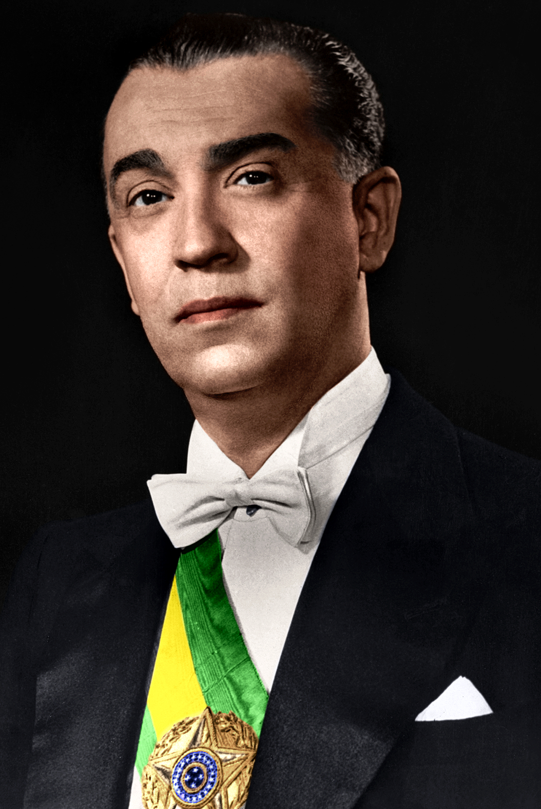
Juscelino Kubitschek
1902–1976O fundador-candidato
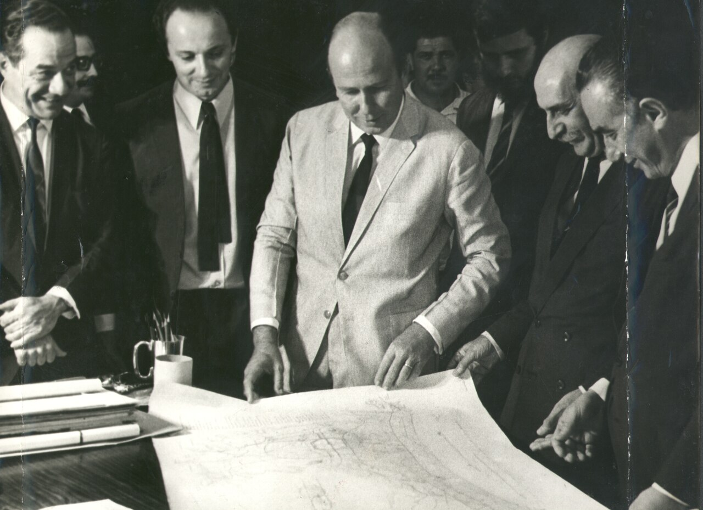
Lúcio Costa
1902–1998O urbanista do “ato deliberado de posse”
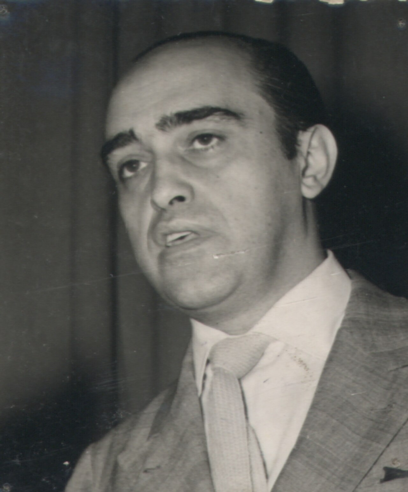
Oscar Niemeyer
1907–2012O arquiteto comunista do poder
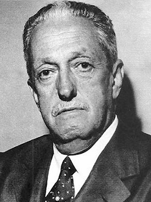
Israel Pinheiro
1896–1973O executor da Novacap
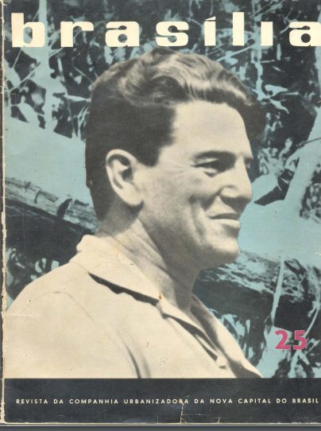
Bernardo Sayão
1901–1959O pioneiro da estrada
Ernesto Silva
1914–2010O médico burocrata da mudança
Joaquim Cardozo
1897–1978O poeta que calculou os palácios
Augusto Frederico Schmidt
1906–1965O poeta católico que escrevia a voz do presidente
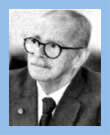
Darcy Ribeiro
1922–1997A utopia universitária
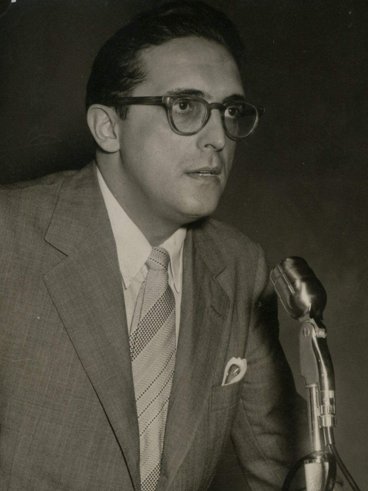
Carlos Lacerda
1914–1977O adversário como contraprova
Critério de escolha. Pesaram três coisas: papel decisivo na concepção, na construção ou na legitimação da cidade; diversidade de perfis (político, urbanista, arquiteto, engenheiro, pioneiro, ideólogo e opositor); e existência de declarações verificáveis.
Ficaram de fora como personagens centrais, com menção pontual:
- Roberto Burle Marx e Athos Bulcão, porque não foram verificadas falas suas sobre o sentido político da cidade;
- Lucas Lopes, documentado apenas por fonte secundária.
Advertência sobre os perfis. Os dados biográficos básicos (datas, cargos e partidos) vêm do conhecimento corrente e das fontes indicadas. Onde um dado não foi conferido nesta sessão, isso está dito.
1. Juscelino Kubitschek de Oliveira (1902–1976): o fundador-candidato
Perfil.
- Médico mineiro de Diamantina.
- Prefeito de Belo Horizonte, quando encomendou a Pampulha a Niemeyer; depois governador de Minas e presidente da República pelo PSD (1956–1961). O PSD era um partido de centro, conservador e de base rural, herdeiro do getulismo.
- Católico praticante. Desenvolvimentista pragmático, sem marxismo e sem doutrina rígida.
- Teve os direitos políticos cassados em 1964 e morreu em 1976, num desastre de automóvel na via Dutra.
Religião. O catolicismo de JK era público e politicamente útil. A primeira missa de Brasília (03/05/1957) e a profecia de Dom Bosco foram incorporadas à propaganda oficial (eixo-A, 2.9 e 4.1). A frase mais célebre de sua biografia política, "Deus poupou-me o sentimento do medo", tem autoria disputada. O discurso seria de Schmidt, e a frase, segundo uma das versões, sugestão do escritor Autran Dourado (Estadão e Observatório da Imprensa, https://www.observatoriodaimprensa.com.br/memoria/_ed715_afinal_quem_escreve_a_historia/ fontes secundárias). A tradição a apresenta como resposta ao veto de 1955 (por exemplo, Silvestre Gorgulho, Correio Braziliense, artigo de opinião, 31/01/2026). Mas esta pesquisa não localizou a fonte primária: o discurso, a data e o veículo em que a frase foi dita ou publicada. Usar só como "frase atribuída". EM APURAÇÃO.
Visão pública de Brasília. Uma cidade-destino, interiorizadora e moderna, capaz de transformar a "solidão" do Planalto no "cérebro das altas decisões nacionais":
"Deste Planalto Central, desta solidão que em breve se transformará em cérebro das altas decisões nacionais, lanço os olhos mais uma vez sobre o amanhã do meu País e antevejo esta alvorada, com fé inquebrantável e uma confiança sem limites no seu grande destino." (02/10/1956; Por que construí Brasília, ed. Senado 2000, pp. 53–54 conferida na fonte)
Visão privada e contradições. O livro confessa que a capital não estava no programa (episódio de Jataí, Parte I) e exibe a sensibilidade de dono diante da cidade provisória. Sobre a Cidade Livre: "Era uma espécie de Cingapura tupiniquim, com seus bares, seus restaurantes misteriosos" (p. 87 conferida no dossiê). JK nega a "ponte aérea" de tijolos, com a frase "A alegação era tão inverídica quanto maliciosa" (pp. 94–95 conferida no dossiê), e trata a CPI como manobra de Lacerda (pp. 251–254). Sobre o massacre da GEB (1959) e sobre as mortes no canteiro, que nunca foram contadas, o livro não diz o que um filme precisaria ouvir (ver eixo-A, 2.1 e 2.2).
Como a cidade deveria funcionar, para ele. Como sede de um Executivo forte, que se dirige à nação a partir do centro. O "cérebro" da sua frase é a metáfora exata: decisões tomadas no alto e transmitidas ao corpo.
2. Lúcio Costa (1902–1998): o urbanista do "ato deliberado de posse"
Perfil.
- Nasceu em Toulon, na França, e formou-se na Escola Nacional de Belas Artes.
- Começou neocolonial e converteu-se ao modernismo de Le Corbusier. Foi o mestre da geração de Niemeyer: chefiou a equipe do edifício do Ministério da Educação e Saúde, no Rio, e trabalhou décadas no SPHAN, com Rodrigo Melo Franco de Andrade.
- Esta pesquisa não localizou militância partidária nem religiosa de Costa: não lhe atribuir nenhuma.
- O próprio Relatório revela um reformista que trabalha dentro da ordem existente. A "gradação social" das quadras aparece ali como "as gradações próprias do regime vigente".
Visão pública: a cidade como civitas, monumental e igualitária "num certo grau". Todas as citações a seguir foram conferidas na transcrição integral (doc.brazilia, http://doc.brazilia.jor.br/plano-piloto-Brasilia/relatorio-Lucio-Costa.shtml; ed. Iphan 2018):
- "Trata-se de um ato deliberado de posse, de um gesto de sentido ainda desbravador, nos moldes da tradição colonial."
- "Nasceu do gesto primário de quem assinala um lugar ou dele toma posse: dois eixos cruzando-se em ângulo reto, ou seja, o próprio sinal da cruz." (item 1)
- A cidade deve ser concebida "não apenas como URBS, mas como CIVITAS", com "caráter monumental. Monumental, não no sentido de ostentação, mas no sentido da expressão palpável, por assim dizer, consciente, daquilo que vale e significa."
- Sobre as superquadras: "as quadras contíguas à rodovia serão naturalmente mais valorizadas que as quadras internas, o que permitirá as gradações próprias do regime vigente; contudo, o agrupamento delas, de quatro em quatro, propicia num certo grau a coexistência social, evitando-se assim uma indevida e indesejável estratificação." (item 17)
- "Neste sentido deve-se impedir a enquistação de favelas tanto na periferia urbana quanto na rural. Cabe à Companhia Urbanizadora prover dentro do esquema proposto acomodações decentes e econômicas para a totalidade da população." (item 17)
- Para as casas de "alto padrão arquitetônico": "o afastamento mínimo de um quilômetro de casa a casa, o que acentuará o caráter excepcional de tais concessões." (item 18)
A contradição está no próprio texto. O item 17 promete coexistência e prevê, na mesma passagem, a "gradação social". O item 18 prevê o enclave dos ricos, embrião do Lago Sul. O item 20 reserva a orla "para os passeios e amenidades bucólicas de toda a população urbana". Trinta anos depois, Costa admitiu o "surgimento precoce e improvisado das cidades satélites" e o isolamento de dois terços da população (Brasília revisitada, 1987 conferida na fonte).
A frase não verificada. Circula a versão de que Costa teria dito, em Conterrâneos velhos de guerra (Vladimir Carvalho, 1990/91), que o massacre de 1959 "não tem a menor importância" do ponto de vista da construção da cidade. NÃO VERIFICADA no filme: aparece só na Wikipédia e no G1. Não usar literalmente antes de conferir a minutagem.
3. Oscar Niemeyer (1907–2012): o arquiteto comunista do poder
Perfil ideológico, sem atenuantes. Niemeyer filiou-se ao Partido Comunista Brasileiro (PCB) em 1945 (Folha de S.Paulo, 10/09/2010, https://www1.folha.uol.com.br/fsp/mundo/ft1009201004.htm conferida na fonte). Permaneceu comunista declarado até morrer, aos 104 anos. A Folha o descreveu, em 2010, como "um dos artistas brasileiros mais radicais na defesa do comunismo". A mesma reportagem registra que Fidel Castro, na carta de renúncia de 2008, escreveu: "Penso como Niemeyer que é preciso ser consequente até o final" [conferida na reportagem; carta original não conferida].
Declarações conferidas na fonte (entrevista à Folha de S.Paulo, "Quando a vida se degrada, só a revolução", 14/09/2002, https://www1.folha.uol.com.br/fsp/ilustrad/fq1409200209.htm):
- Revolução: "Eu sempre digo que quando a vida se degrada e a esperança sai do coração dos homens, só a revolução." Perguntado se armada: "Se for preciso, sim."
- Fidel: "Nós precisamos usar aqui o exemplo do Fidel. [...] É um sujeito muito bom, é um líder da América Latina."
- URSS e Stalin: "O que se passou na União Soviética foi um acidente de percurso. Outro dia veio um soviético falar comigo. Perguntei a ele o que ele pensava de Stálin. Ele disse que estava de acordo com tudo o que ele fez. De modo que a idéia não acabou. Está no ar."
- Capitalismo e o partido: "O regime capitalista nunca nos abriu uma brecha para o mundo melhor que queremos." / "Acho que tem que mudar o regime." / "Sinto falta do Partido Comunista Brasileiro ter mais espaço na TV para falar suas idéias. Nós queremos virar a mesa, mudar o mundo."
Outras fontes da mesma linha:
- A reportagem principal daquela edição ("Oscar Niemeyer, o comunista manifesto", 14/09/2002, https://www1.folha.uol.com.br/fsp/ilustrad/fq1409200206.htm conferida na fonte) registra que ele colocava "no pedestal", ao lado de Lênin, "diversos outros ícones da esquerda (de Stálin a Fidel Castro)".
- No artigo assinado "Pensando em Cuba" (Folha, 14/08/2006, https://www1.folha.uol.com.br/fsp/opiniao/fz1408200608.htm conferida na fonte), conta que ele e os amigos assinavam manifestos "rebatendo com vigor tudo que surgia contra a revolução cubana" e que se via como "o único morador comunista naquele edifício".
- Em 2003, disse que "o partido para mim foi uma escola" e lembrou os "antigos camaradas do velho PCB, radicais, incorruptíveis, voltados para a luta política como uma religião" (Folha, 06/09/2003, https://www1.folha.uol.com.br/fsp/ilustrad/fq0609200310.htm [conferida em trecho de busca; conferir a página inteira]).
Religião. Ateu declarado "desde muito cedo", apesar das "origens familiares católicas" (Valor Econômico, 22/08/2011, https://valor.globo.com/eu-e/noticia/2011/08/22/a-arquitetura-ainda-me-convoca-com-toda-a-forca-diz-oscar-niemeyer.ghtml [conferida em trecho]). Perguntado se tinha alguma crença religiosa, respondeu em 2002: "Não, para mim é ilusão. Mas não sou contra o povo ter um religião" (Folha, 14/09/2002 [conferida na fonte; sic, "um religião"]). Justificou a Catedral assim: "o prazer que sinto em ver uma obra bem realizada é muito menor do que a importância que lhe dão aqueles que vão frequentá-la, pois ali acreditam estar perto de Deus" (apresentação de As igrejas de Oscar Niemeyer, 2011, citada pelo Estadão, https://www.estadao.com.br/sao-paulo/oscar-niemeyer-lanca-livro-sobre-16-projetos-de-igrejas-imp-/ fonte secundária). Uma versão mais longa termina com "Eis como eu posso justificar essa contradição que alguns levantam contra a minha posição de comunista e o meu interesse em desenhar obras de caráter religioso" (Senado, nota de 2012 fonte secundária).
A ideologia e a obra. A frase de Niemeyer incorporada à Sinfonia da Alvorada resume a promessa humanista: "uma cidade de homens felizes, homens que sintam a vida em toda a sua plenitude, em toda a sua fragilidade" (Minha experiência em Brasília, 1961, via texto de Vinicius de Moraes [fonte secundária; página não conferida]). Em 2002 ele deu a versão madura da mesma ideia: "Eu sempre digo que não dou muito importância para a arquitetura. Importante são as pessoas. O dia em que a vida for mais humana, mais solidária, aí sim os prédios vão ter um feitio diferente" (Folha, 14/09/2002 conferida na fonte).
O confronto com a realidade. O arquiteto comunista:
- desenhou, para um governo do PSD, os palácios de um Estado capitalista;
- viu esses palácios abrigarem, quatro anos depois, 21 anos de ditadura anticomunista;
- teve as obras erguidas por operários em turnos de "cerca de 16 horas" (JK, p. 92), que moravam em acampamentos e foram removidos para as satélites.
Niemeyer explicou muitas vezes essa contradição pela tese de que a arquitetura não muda a sociedade, e só a revolução a muda. A tese é coerente, mas é também uma isenção cômoda: o mal fica por conta do capitalismo, e a beleza fica com o arquiteto. No documentário de Vladimir Carvalho, perguntado sobre o massacre de 1959, Niemeyer manda desligar a câmera (Monfrini, ANPUH-SP, 2020 [fonte secundária; conferir a minutagem]). Seu próprio relato de boemia completa o retrato: "Quando eu fui para Brasília, por exemplo, não levei só intelectuais. [...] Eu queria era conversar, beber, tomar um porre" (Folha, 14/09/2002 conferida na fonte).
O que se pode afirmar com segurança. O comunismo de Niemeyer não aparece como programa explícito na planta de Brasília, que é de Costa, nem nas encomendas, que eram de JK. Aparece na estética de um Estado monumental, coletivo e paternal, em que o povo é destinatário da beleza e não autor do espaço. Clarice Lispector chegou a lhe perguntar: "Eu uma vez escrevi: 'A construção de Brasília: a de um estado totalitário'. Que é que você acha dessa minha impressão, Oscar?" (entrevista citada por C. Mendes de Sousa, IMS, 2017, https://site.claricelispector.ims.com.br/2017/09/18/brasilia-em-sobrevoo/ [fonte secundária; data da entrevista não conferida]). A pergunta continua de pé.
4. Israel Pinheiro (1896–1973): o executor da Novacap
Perfil.
- Engenheiro, filho do governador mineiro João Pinheiro, de formação positivista (Wikipédia fonte secundária).
- Deputado constituinte em 1946 pelo PSD, presidente da Novacap (1956–1960), primeiro prefeito do DF e, mais tarde, governador de Minas.
- É o tipo do técnico-político mineiro capaz de executar obras em ritmo militar.
- Segundo o relato de Tamanini via G1, era devoto de Dom Bosco (EM APURAÇÃO, fonte única).
Visão de Brasília. Uma obra a ser terminada no prazo, a qualquer custo. Mandou exibir os cinejornais coloridos em cidades de Minas para vencer a "pressão contrária" (depoimento do cinegrafista Sálvio Silva a Gomes, 2013 fonte secundária). A Novacap sob seu comando funcionava como poder quase soberano, com polícia própria, a GEB, cuja violência culminou no massacre da Pacheco Fernandes, em fevereiro de 1959 (eixo-A, 2.1). O ataque e a morte de Evaristo Soares Brandão são COMPROVADOS; o número total de mortos é controverso.
Citação. A frase sobre os 20 mil colchões nunca devolvidos ("Meu filho, o que a Novacap vai fazer com tanto colchão usado?") aparece no Memorial da Democracia sem fonte primária. Usar apenas como anedota atribuída.
5. Bernardo Sayão (1901–1959): o pioneiro da estrada
Perfil.
- Engenheiro agrônomo carioca.
- Dirigiu a Colônia Agrícola Nacional de Goiás, em Ceres, peça da "Marcha para o Oeste" do Estado Novo, e foi vice-governador de Goiás.
- Como diretor da Novacap, abriu a primeira pista de pouso, de 2.700 m (Memorial da Democracia, card 3), e comandou a abertura da Belém-Brasília.
- Morreu em 15 de janeiro de 1959, atingido por uma árvore que caiu sobre o barracão onde estava, durante a obra (Vice-Governadoria de Goiás, https://goias.gov.br/vicegovernadoria/bernardo-saiao-carvalho-araujo/; UEG, https://www.ueg.br/noticia/37604 fontes secundárias). COMPROVADO.
Perfil ideológico. É o bandeirante do desenvolvimentismo, mais herdeiro do varguismo colonizador da Marcha para o Oeste do que de qualquer ideologia partidária. Não localizei declarações verificadas suas sobre como a capital deveria funcionar politicamente. No filme, vale como símbolo: o único dos grandes nomes que morreu na obra, como os candangos, mas com direito a nome de avenida e a monumento.
6. Ernesto Silva (1914–2010): o médico burocrata da mudança
Perfil.
- Médico (formação militar mencionada em algumas biografias; não conferida nesta sessão).
- Secretário da Comissão de Localização da Nova Capital, presidida pelo marechal José Pessoa.
- Em 1956, assumiu a Comissão de Planejamento da Construção e Mudança da Capital. Foi diretor da Novacap (1956–1961) e assinou o edital do concurso do Plano Piloto.
- Autor de História de Brasília (1970; 4ª ed., 1999) (doc.vfco, http://doc.vfco.com.br/Livros/Historia-de-Brasilia-Ernesto-Silva.shtml fonte secundária).
- Os cargos estão COMPROVADOS. As datas de nascimento e morte não foram reconferidas nesta sessão.
Visão. É a voz da continuidade técnica que liga a Missão Cruls, as comissões militares de localização e a Novacap: a mudança como dever de Estado, executado por técnicos e militares. Sobre o massacre de 1959, circula uma declaração dele, de 1994, que o descreveria como "revolta de trabalhadores seguida de depredações", mas essa declaração só aparece na Wikipédia. NÃO VERIFICADA: não usar literalmente.
7. Joaquim Cardozo (1897–1978): o poeta que calculou os palácios
Perfil.
- Engenheiro estrutural, poeta, dramaturgo e tradutor recifense, poliglota.
- Calculou a Pampulha e os grandes monumentos de Brasília: Alvorada, Planalto, Congresso e Catedral. Niemeyer o chamava de "o brasileiro mais culto que existia" (Academia Nacional de Engenharia, https://anebrasil.org.br/joaquim-cardoso/ fonte secundária).
- Em 1939, o discurso que fez como paraninfo de uma turma de engenharia desagradou ao interventor estadonovista Agamenon Magalhães. Foi "convidado" a construir uma estrada no sertão, recusou e foi demitido, sob a alegação de "incapacidade técnica", o que o levou ao Rio (Jornal de Poesia, http://jornaldepoesia.jor.br/jcardoso4.html; lista ABE/IME-USP fontes secundárias). COMPROVADO quanto ao conflito com o Estado Novo.
Comunismo: EM APURAÇÃO. A única menção localizada é da Wikipédia em português, no verbete de Cristiano Cordeiro, fundador do PCB em Pernambuco, que inclui "Joaquim Cardozo" entre os "simpatizantes mais conhecidos" do partido no Recife (https://pt.wikipedia.org/wiki/Cristiano_Cordeiro). O verbete não traz referência primária para essa afirmação. Não localizei filiação, militância nem declaração política de Cardozo. Sua poesia trata o Nordeste também "como contradição e miséria social" (IME-USP), o que é compatível com uma sensibilidade de esquerda, mas não prova nada. Classificação: EM APURAÇÃO (simpatia); sem prova de filiação.
Função no ensaio. Cardozo mostra que o "milagre" plástico de Brasília, com palácios que mal tocam o chão, foi também um milagre de cálculo. Mostra ainda que a intelectualidade de esquerda, ou próxima dela, estava no coração técnico da capital de um governo de centro.
8. Augusto Frederico Schmidt (1906–1965): o poeta católico que escrevia a voz do presidente
Perfil.
- Poeta da segunda geração modernista, editor e empresário.
- Conselheiro de JK e redator de discursos presidenciais.
- Católico militante e anticomunista.
- Um dos articuladores da Operação Pan-Americana (1958), proposta de desenvolvimento hemisférico apresentada como antídoto ao avanço comunista na América Latina (Sesc SP; FUNAG, https://funag.gov.br/biblioteca-nova/produto/loc_pdf/901/1/augusto_frederico_schmidt fontes secundárias).
- Atribui-se a ele o lema "50 anos em 5" (EM APURAÇÃO).
Função no ensaio. Schmidt é o lado espiritual e conservador do desenvolvimentismo: modernização com Deus, contra Moscou. Ao lado do comunista Niemeyer, mostra que o projeto de Brasília unia católicos anticomunistas e comunistas ateus num mesmo culto, o do Estado construtor. Nenhuma citação literal de Schmidt sobre Brasília foi verificada nesta sessão.
9. Darcy Ribeiro (1922–1997): a utopia universitária
Perfil.
- Antropólogo mineiro, etnólogo do Serviço de Proteção aos Índios.
- Fundador e primeiro reitor da Universidade de Brasília.
- Ministro da Educação e chefe da Casa Civil de João Goulart; exilado depois de 1964.
- Mais tarde, vice-governador do Rio pelo PDT e senador.
- Teve vínculo com o PCB: a Wikipédia registra filiação de 1940 a 1964 [fonte secundária; datas EM APURAÇÃO]. Na maturidade, foi homem de esquerda nacionalista, trabalhista e brizolista.
- A orientação de esquerda está COMPROVADA; as datas de filiação, em apuração.
Visão de Brasília. A capital deveria abrigar uma universidade-modelo, integrada e voltada ao projeto nacional:
"A universidade de que necessita a América Latina, antes de existir como um fato no mundo das coisas, deve existir como um projeto, uma utopia, no mundo das idéias." (A universidade necessária, Paz e Terra, 1969, p. 168 [conferida em cópia digitalizada])
E, com ironia involuntária: "Depois de 1964 muitas universidades brasileiras, antes hostis ao plano de organização da Universidade de Brasília, começaram a manifestar o propósito de adotá-lo como seu projeto de reestruturação" (idem, p. 123 [conferida]). A UnB foi ocupada por tropas depois do golpe. A utopia da esquerda no Planalto foi tomada pela direita, como os palácios.
10. Carlos Lacerda (1914–1977): o adversário como contraprova
Perfil.
- Jornalista, dono da Tribuna da Imprensa, deputado e principal tribuno da UDN; depois governador da Guanabara (1960–1965).
- Militante comunista na juventude, tornou-se o anticomunista mais feroz do país. Converteu-se ao catolicismo (dados biográficos amplamente conhecidos; não reconferidos nesta sessão).
- Ajudou a encurralar Vargas em 1954, combateu a posse de JK em 1955 e apoiou o golpe de 1964. Acabou cassado pelo regime que ajudou a instalar.
- As frases contra a posse, cada uma no seu ano:
- Contra JK, a versão documentada é de 09/11/1955, na Tribuna da Imprensa: "Esses homens não podem tomar posse, não devem tomar posse, não tomarão posse" (Atlas CPDOC, verbete 6022, https://atlas.fgv.br/verbete/6022 conferida na fonte). Antes disso, em janeiro de 1955, ele pedira às Forças Armadas que entregassem "a mãos fortes a sucessão presidencial" (idem).
- A fórmula tríplice que costuma ser atribuída à campanha de 1955 é de 1950, contra Vargas: "o sr. Getúlio Vargas, senador, não deve ser candidato à presidência. Candidato, não deve ser eleito. Eleito, não deve tomar posse. Empossado, devemos recorrer à revolução para impedi-lo de governar" ("Advertência oportuna", Tribuna da Imprensa, 01/06/1950, p. 4, citado por F. F. de Medeiros, ANPUH-RJ, 2020, https://www.encontro2020.rj.anpuh.org/resources/anais/18/anpuh-rj-erh2020/1597847640_ARQUIVO_4d381784d1ce86e6eed1e4ec0c459df6.pdf fonte secundária). Não atribuí-la a 1955.
Visão de Brasília. Contra a mudança, contra a pressa e contra o custo. Assinou o requerimento da CPI de 1959 (Resolução 37/1960 conferida no dossiê). No discurso de 06/07/1960, já na nova Câmara, disse: "Dir-se-ia que nessas planuras imensas a obsessão foi de cavar a terra e nos transformar numa Nação de tatus". Chamou os prédios de "mausoléus da desnecessidade" (Misto Brasil, 2024 fonte secundária). JK o acusou de querer apenas adiar a mudança (JK, pp. 251–254).
Por que ele está entre os dez. Lacerda era o político da rua, do rádio e do jornal carioca, justamente o tipo de poder que Brasília tornaria menos eficaz. Sua oposição não prova a hipótese do "afastamento da pressão" (Parte II, item 1), mas mostra quem tinha a perder com a mudança. Para equilíbrio: a crítica ao custo e à inflação, feita também por economistas como Gudin, é legítima, independentemente do oportunismo de quem a fazia.
Menções complementares (fora dos dez):
- Roberto Burle Marx, paisagista.
- Athos Bulcão, autor dos azulejos que deram à cidade seu ornamento mais popular.
- Lucas Lopes, planejador do Plano de Metas, que previa 15 anos para a mudança.
- Eugênio Gudin, crítico liberal do custo.
- Rachel de Queiroz, a cronista que, já em 1948, previu: "nos novos palácios oficiais será gasta toda a verba destinada à capital e, como sempre acontece, o dinheiro não chegará então nem para hospitais, nem para escolas, nem para nada que sirva realmente ao povo" ("A nova capital", O Cruzeiro, 03/07/1948, https://cronicabrasileira.org.br/cronicas/8309/a-nova-capital conferida na fonte).
A religião em torno da cidade
Brasília é uma cidade laica de devoção difusa. Quatro camadas se sobrepõem:
- O catolicismo oficial do fundador. JK, a primeira missa e a Catedral na Esplanada, embora numa praça autônoma, "uma vez que a Igreja é separada do Estado" (Costa, item 9).
- O mito salesiano. Dom Bosco foi adotado como padroeiro da cidade, com uma profecia talvez "editada" (EM APURAÇÃO).
- O ateísmo do arquiteto. Niemeyer, para quem a religião era "ilusão", justificava a Catedral pelo respeito à fé alheia.
- O misticismo popular e esotérico que se instalou no Planalto depois, como o Vale do Amanhecer e a fama de "capital do terceiro milênio". Não verificado em detalhe neste dossiê: fica como pauta.
O ponto político é este: o Estado desenvolvimentista precisou de um mito religioso para se legitimar, e um comunista ateu deu forma à sua igreja maior. A "fantasia" do título é também teológica. A cidade substitui a Providência pelo Plano, mas guarda um santo de reserva.
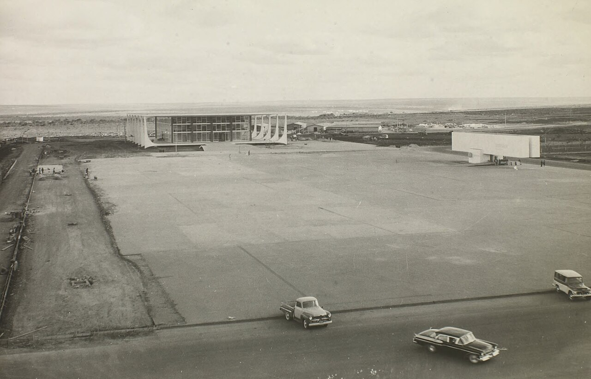
Conclusão: que relação entre governo e povo o projeto imaginou, e que mentalidade o produziu
1. A relação imaginada: o povo como destinatário, e não como interlocutor
As duas escalas. O Plano Piloto separa, com clareza geométrica, duas escalas que Costa nomearia depois: a monumental, do eixo dos poderes e da Esplanada, e a residencial, das asas e superquadras (Brasília revisitada, 1987).
Na escala monumental, o povo é espectador. A Esplanada é um "extenso gramado destinado a pedestres, a paradas e a desfiles" (Relatório, item 9 [conferida]). Previu-se o desfile, que é a multidão ordenada pelo Estado, e não o comício, a passeata ou a assembleia, que são a multidão que se ordena a si mesma. A Praça dos Três Poderes é um "terrapleno triangular, com arrimo de pedra à vista, sobrelevado na campina circunvizinha", ao qual "se tem acesso pela própria rampa da auto-estrada" (idem). É um palco elevado, cujo acesso foi pensado para o automóvel.
Na escala residencial, a cidade abole a rua e a esquina. Costa propôs aplicar "princípios francos da técnica rodoviária — inclusive a eliminação dos cruzamentos — à técnica urbanística" (item 3) e substituiu a rua-corredor pela via expressa e pela quadra ajardinada. Para DaMatta, a rua é o espaço da lei impessoal e do encontro entre desconhecidos iguais, e a casa é o espaço da hierarquia pessoal (A casa & a rua [paráfrase]). Sem rua, sobra a casa: o gabinete, o jantar, o lobby, o corredor do Congresso. É o habitat do funcionário "patrimonial" de Sérgio Buarque, para quem "a própria gestão política apresenta-se como assunto de seu interesse particular" (Raízes do Brasil, 26ª ed., 1995, p. 146 [conferida em cópia digitalizada]).
As superquadras prometeram a "coexistência social" de classes "num certo grau" (item 17). Na prática, nasceram hierarquizadas pelo próprio texto ("as gradações próprias do regime vigente") e se tornaram o bairro da classe média funcionária. Os pobres não foram incluídos nem como vizinhos de quadra. Costa mandava "impedir a enquistação de favelas" e prover "acomodações decentes e econômicas para a totalidade da população". O que veio depois foi isto:
- Taguatinga, primeira satélite, criada em 1958 para receber removidos, dois anos antes da inauguração;
- a Vila Amaury, engolida pelo lago;
- a Ceilândia, de 1971, cujo nome vem da sigla da Campanha de Erradicação de Invasões (TJDFT; G1;
eixo-A, 2.14–2.15).
COMPROVADO. A periferia é mais velha que a capital.
Não há lugar para a multidão. Há espaço vazio em abundância, mas não lugar no sentido político: uma praça cercada de vida urbana, onde o povo encontra o poder no mesmo nível. O povo chega à Esplanada de ônibus, vindo de dezenas de quilômetros, e encontra um gramado sem sombra diante de palácios de vidro. O embaixador Wladimir Murtinho formulou a teoria: "Minha teoria é que ninguém quebra vidro. Pessoa tem medo de vidro, muito mais do que barreira" (depoimento ao APDF, 1990, citado por Brandão, 2023 fonte secundária). Ela funcionou até 8 de janeiro de 2023, quando foi refutada a pedradas.
Em suma, o projeto previa um governo que fala ao povo de cima e de longe, por meio da forma e do espetáculo. E um povo que é servido, e não ouvido: alojado quando possível, removido quando necessário, chamado à Esplanada para desfiles e inaugurações. É o retrato em concreto armado da fórmula de Faoro, "do palácio à sociedade, em dois planos separados", com "o planejamento, tão decorativo, em certos casos, como a ordenança meticulosa" (Os donos do poder, "Capítulo final" [conferida em cópia digitalizada]).
2. A mentalidade dos criadores: quatro traços
a) Elitismo técnico desenvolvimentista. O Estado, guiado por técnicos esclarecidos (planejadores, engenheiros, arquitetos), decide pela sociedade e a transforma. A legitimidade vem do resultado e da velocidade ("cinquenta anos em cinco"), não da deliberação. Os mecanismos de controle foram tratados como obstáculos: a CPI foi adiada e a lei da Novacap, sancionada "sem qualquer publicidade".
b) Utopismo modernista. É a crença, herdada de Le Corbusier e da Carta de Atenas, de que a forma da cidade produz a forma da sociedade: mude-se a planta e mudam as classes. Holston mostrou o resultado. A utopia, habitada, reproduziu e acentuou a estrutura que queria abolir [paráfrase]. Umberto Eco resumiu: "Brasília transformou-se, de cidade socialista que deveria ser, na própria imagem da diferença social" (A estrutura ausente, Perspectiva, p. 246, citado por Ambrogi, Língua e Literatura/USP fonte secundária).
c) Paternalismo autoritário, à esquerda e à direita. É o ponto mais incômodo, e o mais importante para o filme. Brasília foi feita por uma aliança aparentemente improvável:
- um presidente católico do PSD (JK);
- um poeta católico anticomunista que escrevia a voz dele (Schmidt);
- um arquiteto comunista, admirador declarado de Fidel, que via na URSS um "acidente de percurso" e citava sem objeção um soviético que aprovava "tudo" o que Stalin fez (Niemeyer);
- um engenheiro-poeta talvez simpatizante do PCB (Cardozo, EM APURAÇÃO);
- um antropólogo de esquerda que fundou a universidade (Darcy);
- uma burocracia técnica e militar vinda das comissões de localização (Ernesto Silva, marechal José Pessoa);
- um bandeirante da Marcha para o Oeste estadonovista (Sayão).
O que unia esses homens não era um programa partidário. Era uma visão comum do povo como menor de idade, a ser educado, alojado, integrado e embelezado, e não consultado. Para o desenvolvimentista, o povo é beneficiário. Para o comunista, é massa a ser conduzida pela vanguarda. Para o católico conservador, é rebanho. Para o técnico militar, é população a ser ordenada. Em nenhum desses vocabulários o povo aparece como cidadão que delibera na rua. Faoro descreveu essa relação: "o povo quer a proteção do Estado, parasitando-o, enquanto o Estado mantém a menoridade popular, sobre ela imperando" (Os donos do poder [conferida em cópia digitalizada]). Brasília deu endereço a essa menoridade.
d) "O Estado constrói a nação". É a premissa última, comum ao ISEB, ao PCB, à doutrina militar de segurança e ao catolicismo social da época: a nação ainda não existe e precisa ser feita de cima. Brasília não é o lugar onde a sociedade brasileira se reúne para governar a si mesma. É o lugar de onde o Estado brasileiro olha a sociedade, de onde JK, em 1956, "lança os olhos [...] sobre o amanhã do meu País". Daí o "ato deliberado de posse" de Costa e o "padrão de posse" de JK, segundo Paulo Mendes Campos. Toma-se posse do território, e o povo vem depois.
3. A ressalva honesta
Este ensaio não sustenta que Brasília seja um "fracasso" nem que o brasileiro "é assim". Gorelik e Jatobá alertam contra o clichê da "Brasília-fracasso". Jessé Souza alerta contra o culturalismo que transforma desigualdade de classe em traço nacional (eixo-B, itens 14, 33 e 35). A cidade tem qualidades reais: luz, verde, superquadras habitáveis, patrimônio mundial.
A crítica mais forte não é que a cidade seja feia ou fria. É que ela é coerente com uma ideia de poder, e que essa ideia sobreviveu a todos os regimes desde 1960, porque nenhum deles teve motivo para querer outra.
Clarice escreveu que os dois arquitetos "não pensaram em construir beleza, seria fácil; eles ergueram o espanto deles, e deixaram o espanto inexplicado" ("Nos primeiros começos de Brasília" conferida na fonte). Este ensaio arrisca uma explicação: é o espanto de um Estado que se olha no espelho e gosta do que vê, numa cidade aonde, como previu Drummond, "não vai ninguém de dois pés".
Quadro-resumo das classificações
| Afirmação | Classificação |
|---|---|
| Mandatos constitucionais de 1891, 1934 e 1946 | COMPROVADO |
| Missão Cruls e o Quadrilátero de 14.400 km² | COMPROVADO |
| Episódio de Jataí (04/04/1955) | COMPROVADO (nome do interpelante diverge entre as fontes) |
| Brasília ausente do Programa de Metas original | COMPROVADO (pelo próprio JK) |
| Autoria de "50 anos em 5" por Schmidt | EM APURAÇÃO |
| Autoria e data de "Deus poupou-me o sentimento do medo" | EM APURAÇÃO (fonte primária não localizada) |
| "Civilização" acrescentada à profecia de Dom Bosco | EM APURAÇÃO |
| Mudança para afastar o governo da pressão popular | Interpretação historiográfica (efeito COMPROVADO; intenção não documentada) |
| Brasília como plataforma para JK-65 | Pretensão de 1965: COMPROVADO (CPDOC a reconferir); cálculo: interpretação |
| Irregularidades em contratos (CPI, sindicâncias) | Investigações COMPROVADAS; conclusões EM APURAÇÃO |
| "Brasília foi feita para enriquecer empreiteiros" (genérico) | BOATO |
| Especulação fundiária ligada aos fundadores | EM APURAÇÃO |
| Brasília causou a inflação de 1959 | Interpretação (inflação COMPROVADA; peso específico em disputa) |
| Motivação militar contra golpes de guarnição | Interpretação sem documento |
| Memorando militar de jan./1955 por candidato "único e civil", lido por Café Filho na Voz do Brasil | COMPROVADO (Atlas CPDOC) |
| Lott entre os signatários do memorando de 1955 | COMPROVADO (DHBB) |
| "Esquema de pressão [...] jamais tomaria posse" | Texto institucional do Memorial JK; núcleo COMPROVADO; aviso pessoal sem documento |
| "Não podem tomar posse, não devem tomar posse, não tomarão posse" (Lacerda, 09/11/1955) | COMPROVADO |
| "Não deve ser candidato [...] não deve tomar posse" | COMPROVADO como frase de 1950 contra Vargas; atribuí-la a 1955 é erro |
| Cooptação militar pelo orçamento e por Lott | COMPROVADO (FRUS doc. 254; Maram, 1990) |
| Brasília como tática contra o veto militar | Interpretação sem documento (Vesentini: cooptação, pelos efeitos) |
| Niemeyer no PCB desde 1945, ateu, admirador de Fidel, relativizador de Stalin | COMPROVADO |
| Joaquim Cardozo simpatizante do PCB | EM APURAÇÃO (fonte única, Wikipédia) |
| Darcy Ribeiro no PCB | Esquerda COMPROVADA; datas de filiação EM APURAÇÃO |
| Israel Pinheiro devoto de Dom Bosco | EM APURAÇÃO (fonte única) |
| Frase de Lúcio Costa "não tem a menor importância" | NÃO VERIFICADA |
| Frase de Ernesto Silva sobre o massacre (1994) | NÃO VERIFICADA |
| Frase de Israel Pinheiro sobre os colchões | Anedota sem fonte primária |
| Satélites anteriores à inauguração (Taguatinga, 1958) | COMPROVADO |
Fontes
Documentos primários e institucionais
- Constituição de 1891 (Planalto): https://planalto.gov.br/ccivil_03/constituicao/constituicao91.htm
- Constituições de 1934 e 1946, redação reproduzida em: STF, "Linha do tempo – 60 anos do STF em Brasília", https://cms.stf.jus.br/post-sobreostf/linha-do-tempo-60-anos-do-stf-em-brasilia/ · Revista de Informação Legislativa, v. 47, n. 188, https://www12.senado.leg.br/ril/edicoes/47/188/ril_v47_n188_p153.pdf
- TJDFT, "A primeira Constituição da República" (2020): https://www.tjdft.jus.br/institucional/imprensa/campanhas-e-produtos/artigos-discursos-e-entrevistas/artigos/2020/a-primeira-constituicao-da-republica
- Cruls, L., Relatório da Comissão Exploradora do Planalto Central do Brazil (1894): https://bd.camara.leg.br/bd/items/ce299218-2711-4fe6-905b-626dd2af6b89 · PDF: https://static.poder360.com.br/2020/04/relatorio-da-missao-que-explorou-brasilia.pdf
- Costa, Lúcio, Relatório do Plano Piloto de Brasília (1957): http://doc.brazilia.jor.br/plano-piloto-Brasilia/relatorio-Lucio-Costa.shtml · Iphan: https://bibliotecadigital.iphan.gov.br/items/c8257202-fde8-4f25-813a-72914687a097
- Costa, Lúcio, Brasília revisitada 1985/87 (Decreto DF 10.829/1987): https://www.sinj.df.gov.br/sinj/norma/15139/decreto_10829_14_10_1987.html
- Câmara dos Deputados, Resolução nº 37/1960 (CPI da Novacap): https://www2.camara.leg.br/legin/fed/rescad/1960-1969/resolucaodacamaradosdeputados-37-13-maio-1960-319889-publicacaooriginal-1-pl.html
- Memorial JK, "1º comício" (texto institucional sem assinatura; origem da frase "um impressionante esquema de pressão"): http://www.memorialjk.com.br/bsb/pgs/1comicio.htm
- Pessoa, marechal José, carta ao governador Juscelino Kubitschek, 17/11/1954 (Relatório da CLNCF, 1955, p. 18), transcrição em doc.brazilia: http://doc.brazilia.jor.br/HistDocs/1954-11-17-carta-Pessoa-JK.shtml
Documentos diplomáticos americanos (FRUS, desclassificados e publicados)
- FRUS 1958–60, v. V, doc. 254, memorando de conversa JK–Dulles, Palácio Laranjeiras, 05/08/1958 (nota 9): https://history.state.gov/historicaldocuments/frus1958-60v05/d254
- FRUS 1955–57, v. VII, doc. 372, despacho de Briggs, "Brazil in 1958", 31/12/1957: https://history.state.gov/historicaldocuments/frus1955-57v07/d372
- FRUS 1955–57, v. VII, doc. 354, NIE 93-57, 08/01/1957: https://history.state.gov/historicaldocuments/frus1955-57v07/d354
- Repositório Opening the Archives (Brown University), telegramas sobre a mudança dos ministérios militares (1967–73): https://repository.library.brown.edu/studio/item/bdr:364544/
Obras de referência (CPDOC/FGV, IBGE)
- Atlas Histórico do Brasil (CPDOC/FGV), verbete "Movimento do 11 de Novembro" (Sérgio Lamarão): https://atlas.fgv.br/verbete/6022
- DHBB (CPDOC/FGV), verbete "Lott, Henrique" (espelho): https://wiki-dhbb.netlify.app/3008
- CPDOC/FGV, biografia de Juscelino Kubitschek: https://cpdoc.fgv.br/biografias/juscelino-kubitschek
- CPDOC/FGV, "João Goulart, o aumento do salário mínimo e o Memorial dos Coronéis": https://cpdoc.fgv.br/getulio-vargas-1954/memorial-dos-coroneis
- Memória IBGE, "Djalma Polli Coelho": https://memoria.ibge.gov.br/historia-do-ibge/galeria-de-presidentes/20959-djalma-polli-coelho.html
- Banco Central, SGS, série 190 (IGP-DI): https://api.bcb.gov.br/dados/serie/bcdata.sgs.190/dados?formato=json
Livros
- Kubitschek, J., Por que construí Brasília (Bloch, 1975; Senado, 2000): https://www2.senado.leg.br/bdsf/handle/id/1039
- Faoro, R., Os donos do poder (1958; 3ª ed., Globo, 2001)
- Holanda, S. B. de, Raízes do Brasil (1936; 26ª ed., Companhia das Letras, 1995)
- Holston, J., A cidade modernista (Companhia das Letras, 1993; orig. The Modernist City, 1989): https://www.jamesholston.com/a-cidade-modernista
- Ribeiro, G. L., O capital da esperança (Editora UnB, 2008)
- Holanda, F. de, O espaço de exceção (2ª ed., 2018): https://www.observatoriodasmetropoles.net.br/wp-content/uploads/2018/04/O_ESPACO_DE_EXCECAO_Livro_completo.pdf
- Vidal, L., De Nova Lisboa a Brasília (Editora UnB, 2009)
- Couto, R. C., Brasília Kubitschek de Oliveira (Record, 2001); entrevista a Vitruvius, Entrevista 010.01 (2002): http://vitruvius.com.br/revistas/read/entrevista/03.010/3342?page=4
- Bojunga, C., JK: o artista do impossível (Objetiva, 2001)
- Vaitsman, M., Quanto custou Brasília (1968): http://doc.vfco.com.br/Bibliografia/Quanto-custou-Brasilia-livro-Mauricio-Vaitsman.shtml
- Ribeiro, D., A universidade necessária (Paz e Terra, 1969)
- Silva, E., História de Brasília (1970): http://doc.vfco.com.br/Livros/Historia-de-Brasilia-Ernesto-Silva.shtml
- Lispector, C., A descoberta do mundo (Rocco, 1999): https://cronicabrasileira.org.br/cronicas/5890/nos-primeiros-comecos-de-brasilia
- Nunes, E., A gramática política do Brasil (1997); DaMatta, R., A casa & a rua; Abranches, S., "Presidencialismo de coalizão", Dados, 1988 (ver
eixo-B)
Artigos e imprensa
- Folha de S.Paulo, 14/09/2002, entrevista com Niemeyer: https://www1.folha.uol.com.br/fsp/ilustrad/fq1409200209.htm · "Oscar Niemeyer, o comunista manifesto": https://www1.folha.uol.com.br/fsp/ilustrad/fq1409200206.htm
- Niemeyer, O., "Pensando em Cuba", Folha, 14/08/2006: https://www1.folha.uol.com.br/fsp/opiniao/fz1408200608.htm
- Folha, 06/09/2003: https://www1.folha.uol.com.br/fsp/ilustrad/fq0609200310.htm
- Folha, 10/09/2010: https://www1.folha.uol.com.br/fsp/mundo/ft1009201004.htm
- Valor Econômico, 22/08/2011: https://valor.globo.com/eu-e/noticia/2011/08/22/a-arquitetura-ainda-me-convoca-com-toda-a-forca-diz-oscar-niemeyer.ghtml
- Estadão, "Oscar Niemeyer lança livro sobre 16 projetos de igrejas": https://www.estadao.com.br/sao-paulo/oscar-niemeyer-lanca-livro-sobre-16-projetos-de-igrejas-imp-/
- Maram, S., "Juscelino Kubitschek and the Politics of Exuberance, 1956–1961", Luso-Brazilian Review 27:1 (1990), pp. 31–45: https://warwick.ac.uk/fac/arts/history/students/modules/hi2f1/programme/seminar15/sheldon_maram_on_jk_1990_lbr.pdf
- Vesentini, J. W., "O espaço do mesmo", Boletim Paulista de Geografia, nº 62 (1985), resumo da tese A capital da geopolítica (USP, 1985): https://publicacoes.agb.org.br/boletim-paulista/article/download/990/881/2385
- Medeiros, F. F. de, "Carlos Lacerda e a radicalização da oposição ao getulismo (1945-1954)", ANPUH-RJ (2020): https://www.encontro2020.rj.anpuh.org/resources/anais/18/anpuh-rj-erh2020/1597847640_ARQUIVO_4d381784d1ce86e6eed1e4ec0c459df6.pdf
- Gorgulho, S., "O Brasil de JK: há 70 anos Juscelino tomava posse na Presidência", Correio Braziliense, 31/01/2026 (opinião): https://www.correiobraziliense.com.br/opiniao/2026/01/7344696-o-brasil-de-jk-ha-70-anos-juscelino-tomava-posse-na-presidencia.html
- Tavares, J., Arquitextos 086.07 (2007): https://vitruvius.com.br/revistas/read/arquitextos/08.086/234
- Derntl, M. F., Arquitextos 249.06 (2021): http://vitruvius.com.br/revistas/read/arquitextos/21.249/8010
- Brandão, C. R. C., Arquitextos 278.02 (2023): https://vitruvius.com.br/revistas/read/arquitextos/24.278/8853
- Wisnik / Favaretto, Releituras do Modernismo (BBM-USP, 2022): https://bbm.usp.br/documents/84/ReleiturasDoModernismo.pdf
- Mendes de Sousa, C., "Brasília em sobrevoo" (IMS, 2017): https://site.claricelispector.ims.com.br/2017/09/18/brasilia-em-sobrevoo/
- G1, 08/12/2024 (Dom Bosco): https://g1.globo.com/df/distrito-federal/noticia/2024/12/08/sacerdote-italiano-teria-tido-sonho-profetico-sobre-brasilia-em-1883-entenda-a-historia.ghtml
- Poder360 (custo): https://www.poder360.com.br/brasilia/construcao-de-brasilia-custou-12-do-pib-brasileiro/
- Misto Brasil, 08/03/2024 (Lacerda): https://mistobrasil.com/2024/03/08/carlos-lacerda-chama-predios-de-brasilia-de-mausoleus-da-desnecessidade/
- Memorial da Democracia: http://www.memorialdademocracia.com.br/card/jk-percorre-o-brasil-duas-vezes · https://memorialdademocracia.com.br/card/nacional-desenvolvimentismo · https://memorialdademocracia.com.br/card/construcao-de-brasilia/7
- OAB-GO, "Toniquinho JK": https://www.oabgo.org.br/oab-go-rende-suas-homenagens-a-toniquinho-jk/
- Disparada (trecho de Por que construí Brasília): https://disparada.com.br/juscelino-kubitschek-por-que-construi-brasilia/
- Monografia UFOP, "50 anos em 5": https://www.monografias.ufop.br/bitstream/35400000/8391/3/MONOGRAFIA_Hist%C3%B3riaResultadosPlano.pdf
- Academia Nacional de Engenharia, "Joaquim Cardoso": https://anebrasil.org.br/joaquim-cardoso/ · Jornal de Poesia: http://jornaldepoesia.jor.br/jcardoso4.html · Wikipédia, "Cristiano Cordeiro": https://pt.wikipedia.org/wiki/Cristiano_Cordeiro
- Vice-Governadoria de Goiás, "Bernardo Sayão": https://goias.gov.br/vicegovernadoria/bernardo-saiao-carvalho-araujo/
- Sesc SP, "Schmidt, nosso 'gordinho sinistro'": https://portal.sescsp.org.br/online/artigo/3399_SCHMIDT+NOSSO+GORDINHO+SINISTRO · FUNAG: https://funag.gov.br/biblioteca-nova/produto/loc_pdf/901/1/augusto_frederico_schmidt
- Observatório da Imprensa, "Afinal, quem escreve a História?": https://www.observatoriodaimprensa.com.br/memoria/_ed715_afinal_quem_escreve_a_historia/
- Crônicas (Portal da Crônica Brasileira/IMS): Rachel de Queiroz, https://cronicabrasileira.org.br/cronicas/8309/a-nova-capital · https://cronicabrasileira.org.br/cronicas/9149/socorro · https://cronicabrasileira.org.br/cronicas/9161/tempo-parado ; Drummond, https://cronicabrasileira.org.br/cronicas/17485/simbolico ; Paulo Mendes Campos, https://cronicabrasileira.org.br/cronicas/12959/brasilia
Dossiê interno
CONCEITO.md,eixo-A-construcao.md(seções 2.1–2.20, 4, 7),eixo-B-bibliografia.md(itens 1–35),antologia-literaria.md,jk-veto-militar-e-brasilia.md(08/10/2026).
Créditos das imagens
Todas as imagens foram baixadas do Wikimedia Commons e estão hospedadas neste site. Licenças conforme indicadas nas páginas de origem. Personagens sem retrato livre localizado aparecem com as iniciais.
- Lúcio Costa, 1970.tif
Autor desconhecido · Arquivo Nacional · Domínio público · Wikimedia Commons · 1970 - Oscar Niemeyer (1957).tif
Autor desconhecido · Arquivo Nacional · Domínio público · Wikimedia Commons · 1957 - Israel Pinheiro da Silva (cropped).png
Autor desconhecido · Domínio público · Wikimedia Commons · 1960 - Revista Brasília (Bernardo Sayão).png
Governo do Brasil/Companhia Urbanizadora da Nova Capital do Brasil · Governo do Brasil/Arquivo Público do Distrito Federal · Domínio público · Wikimedia Commons · janeiro de 1959 - Darcy Ribeiro Senador.jpg
Senado Federal do Brasil/Agência Senado · Atribuição (Agência Senado) · Wikimedia Commons - Carlos Lacerda, 1954 (cropped).tif
Autor desconhecido · Arquivo Nacional · Domínio público · Wikimedia Commons · 1954 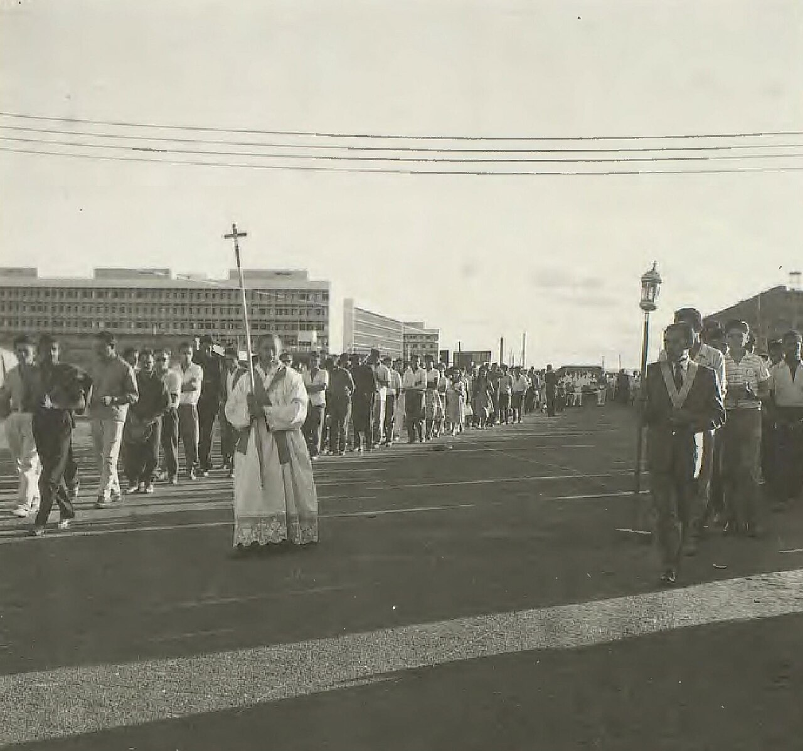
Inauguração de Brasília - BR RJANRIO PH 0 FOT 00749 0084, Acervo do Arquivo Nacional.jpg
Autor desconhecido · Fundo Correio da Manhã, Arquivo Nacional · Domínio público · Wikimedia Commons · 21 April 1960- Construção dos prédios ministeriais - BR RJANRIO PH 0 FOT 00694 0054, Acervo do Arquivo Nacional.jpg
Autor desconhecido · Fundo Correio da Manhã, Arquivo Nacional · Domínio público · Wikimedia Commons · 12 June 1960 - Palácio Administrativo, na Praça dos Três Poderes - BR RJANRIO PH 0 FOT 00742 0010, Acervo do Arquivo Nacional.jpg
Autor desconhecido · Fundo Correio da Manhã, Arquivo Nacional · Domínio público · Wikimedia Commons · 14 April 1960 - Supremo Tribunal na Praça dos Três Poderes - BR RJANRIO PH 0 FOT 00694 0065, Acervo do Arquivo Nacional.jpg
Autor desconhecido · Fundo Correio da Manhã, Arquivo Nacional · Domínio público · Wikimedia Commons · 11 June 1960